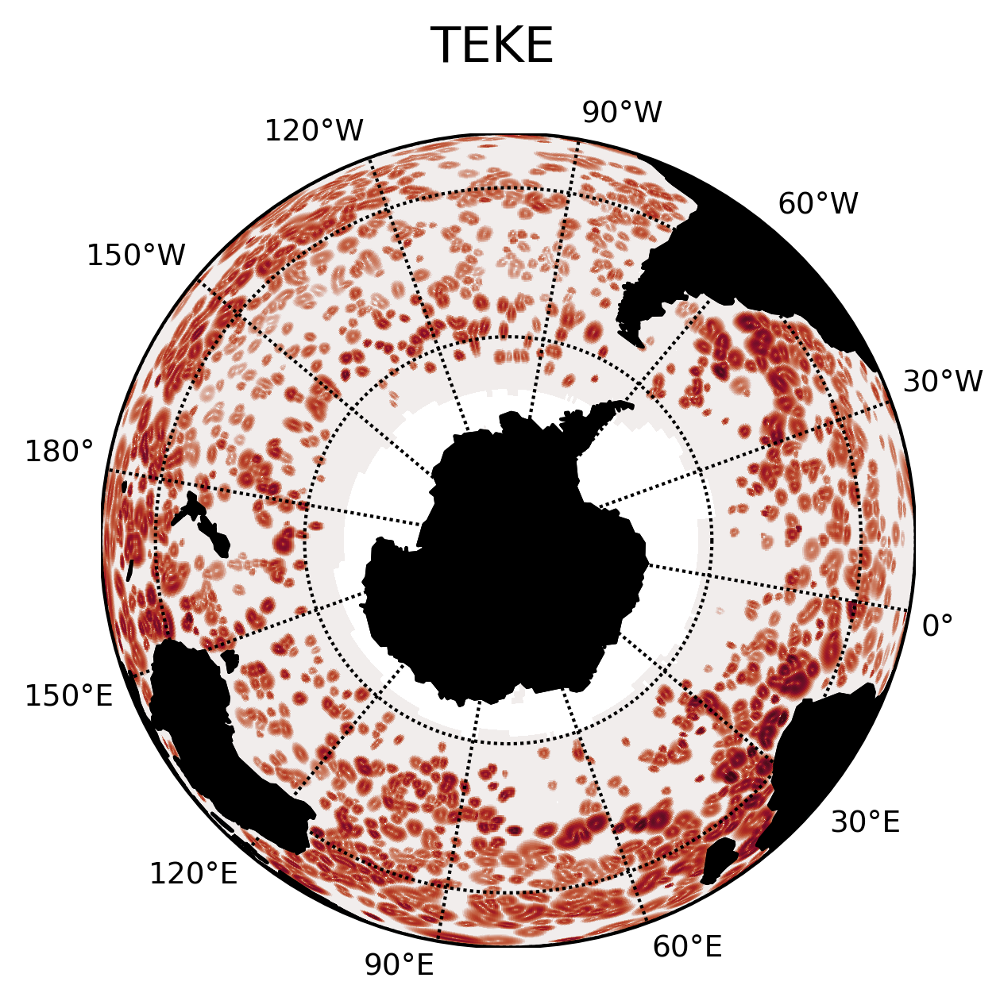

ABOUT ME
“LIVE AS IF YOU WERE TO DIE TOMORROW. LEARN AS IF YOU WERE TO LIVE
FOREVER."
―MAHATMA GANDHI
I am Josué Martínez Moreno a proactive Mexican Earth Scientist
interested in oceanic climate and environmental issues,
particularly where there is a high impact in population.
Currently, my PhD research focuses on the effects of climate
change over oceanic processes (eddies and jets) through
perturbations of kinetic energy. This research is relevant
due to a possible intensification of coastal heatwaves,
changes in the distribution of oceanic primary productivity and
potential feedbacks to the earth climate.
Josué
Martínez Moreno

A few years ago few fortuitous events allowed me to teach
science as a volunteer in Mexican rural communities and I
loved it! This inspired me to teach as a professor
assistant, a demonstrator and also pursuit an academic
formation in order to transfer my knowledge through
teaching.
I spend my free time on random projects, sometimes some
of this projects are about coding in order to solve
problems in my quotidian life, other times are more
artistic like acrylic painting, handmade earrings and
photography. I constantly provide myself with new ways to
learn different skills which fulfil my passion for
learning. Additionally, I enjoy expending time in nature,
diving, climbing and other outside activities.
My skills:
PYTHON
LaTeX
BIG DATA
WEB DEVELOP
Past projects
Most of the 80 percent of untreated global waterwaste ends
up in the ocean, transported through river plumes.
River plumes are buoyant plumes of water, which provide
the driving mecanism for the circulation of the coastal
ocean. Most of the untreated water has the potential to
change the properties of water as: patogens, organic matter,
chemical pollution, salinity, plastic pollution and
pharmaceuticals. Comonly, the river plume density is smaller
than the oceanic water allowing the propagation of the river
plume over large extensions over the coastal ocean.
To understand the dispersion and transport of pollutants
of the river plumes, I studied the Coatzacoalcos and
Grijalva-Usumacinta rivers plumes since they are the
rivers more tainted and with more flux of Mexico,
respectively. The region where those rivers are located
have an important seasonal variability due the wind and
coastal currents. Passive pollutants had the capability to
disperse from the south Gulf of Mexico to the Missisipi
River mouth with a concentration of 0.01% of its original.
This value may look insignificant, however in a lot of cases
the tolerance limit of certain pollutants is under
picograms.
Current Project
I'm current developing a new methodology to
decompose transient kinetic energy into oceanic
processes. The focus of this project is on transient
kinetic energy contained in mesoscale eddies.
This methodology uses a new eddy tracking
algorithm, where the basic premise is that all
eddies can be optimal fitted by a Gaussian feature.
Afterwards, through a geostrophical approximation,
the kinetic energy contained in the eddies can be
calculated.
Our method is effective in determining how much energy
is contained in mesoscale eddy-like features.
Synthetic data was used to assess the sensitivity and
energy content by this method.
Additionally, the algorithm was implemented to analyze
trends of transient kinetic energy in the Southern
Ocean using the Satellite SSHa (Aviso+) and
state-of-the-art $1/10$ degree simulation (ACCESS-OM2).
The presented results show an increasing trend of
transient kinetic energy inside eddies and also an
increase of the eddy amplitude in the Southern Ocean.


Future projects
As presented on the current project, most of the energy is
located in just eight regions of the SO.
Most of the hotspots in the SO are also the areas with the
largest positive trend. Some others do not present such
increase, which suggests the eddy dynamics or the
interaction between processes my differ.
Therefore, the next step of interest, will be to
understand each region and provide some hypothesis to
explain the different regimes of these oceanic regions.
Exploratory regional analysis at the Agulhas Current
suggest an energy transfer between the eddy processes
and the jet processes, which may be one of the reasons
why the energy is not increasing consistently in all
western boundary currents.
The figure shows the TKE, TEKE and TRKE trend at the
Agulhas Current region.
Note that the magnitude of TEKE is smaller than TRKE at
the beginning of the record, however at the end of the
time-series TEKE is larger than TRKE.
This change in magnitude could be explained by an energy
input from the jet-meander field into the eddy field.
This hypothesis is consistent with the Agulhas meander
flattening, however further research is necessary.

❮
❯
PHOTOGRAPHY
My photograph pasion focus on flowers, landscapes and culture.
WHERE I STUDY
I'd be happy to hear from you!